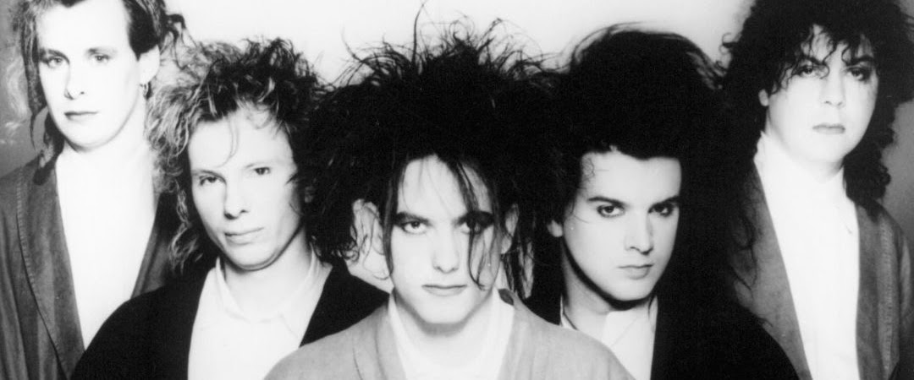

THE CURE
SOBRE
The Cure é uma das bandas mais icônicas do rock alternativo, conhecida por sua mistura única de pós-punk, gothic rock e new wave. Formada em 1978, na cidade de Crawley, Inglaterra, a banda foi liderada desde o início pelo vocalista, guitarrista e principal compositor Robert Smith. Com sua estética característica (cabelos desarrumados, maquiagem escura e roupas pretas), Smith se tornou um dos símbolos do rock gótico.
AS MAIS ESCUTADAS
"A Forest", "Just Like Heaven", "Boys Don't Cry", "Lovesong", "Friday I'm in Love"